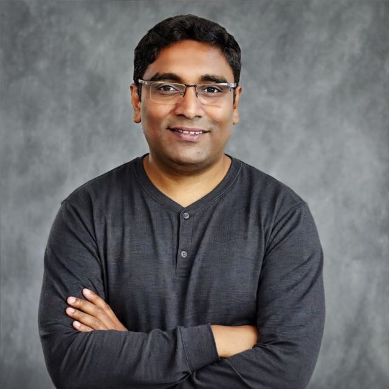

Multi-Cloud Kubernetes
Google Kubernetes Engine (GKE), Amazon EKS, Azure AKS, Red Hat OpenShift, Helm, autoscaling, and cluster lifecycle.
Accomplished Tech Lead & DevSecOps Architect with 16 years of IT experience and 9+ years of enterprise experience in cloud infrastructure, site reliability engineering, and high-availability application delivery, currently advancing expertise across the complete MLOps, LLMOps, AIOps, and AI Agentic Operations lifecycle. Proven background in architecting, deploying, and managing production-grade Kubernetes platforms across Google Kubernetes Engine (GKE), Amazon EKS, Azure AKS, and Red Hat OpenShift.
I focus on bridging enterprise platform engineering with cutting-edge AI systems, leveraging strong foundations in Linux automation, Python, Docker, Infrastructure as Code, and CI/CD pipelines to build scalable, self-healing, and resilient cloud-native AI platforms.

Core Expertise
A proven architectural background spanning multi-cloud Kubernetes, MLOps, LLMOps, AIOps, AI Agentic operations, DevSecOps automation, and production site reliability.
Google Kubernetes Engine (GKE), Amazon EKS, Azure AKS, Red Hat OpenShift, Helm, autoscaling, and cluster lifecycle.
Multi-agent systems, LangChain, LlamaIndex, CrewAI, MCP server/client integrations, tool calling, and autonomous reasoning.
Data & feature stores (Feast), experiment tracking (MLflow, W&B), DVC, ONNX, FastAPI deployment, and Kubeflow/Vertex AI.
Prompt engineering, LoRA/QLoRA fine-tuning, vector databases (ChromaDB, Pinecone, Weaviate), RAG architecture, and guardrails.
Telemetry & APM integration, statistical & ML anomaly detection, predictive analytics, auto-remediation, and chaos engineering.
Linux scripting, Python automation, Git, Docker containerization, Jenkins, GitHub Actions, and microservices security.
Terraform, Ansible playbooks, AWS CloudFormation/IAM/EC2, GCP, Azure, and resilient multi-cloud architecture.
Prometheus, Grafana, ELK/EFK stack, distributed tracing, J2EE migrations (WebLogic, JBoss, WebSphere), and SRE delivery.
Platform Architecture
Venkat architects resilient platforms that unify multi-cloud Kubernetes, autonomous AI agentic workflows, MLOps/LLMOps pipelines, self-healing AIOps, and DevSecOps into a production-grade operating model.
Professional Experience
Recent roles emphasize DevSecOps architecture, AI Agentic workflows, multi-cloud Kubernetes, SRE, production reliability, middleware depth, and platform mentorship.
Leads the platform and DevSecOps engineering team while remaining a hands-on architect for day-to-day production operations, infrastructure architecture, Kubernetes platforms, cloud systems, and security initiatives.
Designed Kubernetes-based microservices infrastructure, IBM Cloud platform operations, and Infrastructure as Code automation.
Designed and implemented Docker Enterprise, Docker Swarm, Kubernetes, and OpenShift container platforms across AWS and on-prem environments.
Built the production middleware foundation behind later platform and reliability engineering work.
Technical Stack & Core Competencies
Deep hands-on proficiency across the complete MLOps, LLMOps, AIOps, AI Agentic operations, cloud-native platforms, and enterprise reliability lifecycle.
Google Kubernetes Engine (GKE), Amazon EKS, Azure AKS, Red Hat OpenShift, Helm, Terraform, Ansible Playbooks, AWS (EC2, CloudFormation, IAM), GCP, Azure, Multi-Cloud Architecture.
Linux Shell Scripting, Python Automation, Git Version Control, Docker & Containerization, Jenkins, GitHub Actions, Microservices Security.
Data & Feature Engineering (Feast), Experiment Tracking (MLflow, Weights & Biases), Model Versioning (DVC), Model Deployment (ONNX, FastAPI, Batch Inference), Continuous Training, Model Monitoring & Drift Detection, ML Orchestration (Kubeflow, SageMaker, Vertex AI pipelines).
Prompt Engineering & Versioning, LLM Fine-Tuning (LoRA, QLoRA), Vector Databases (ChromaDB, Pinecone, Weaviate), RAG Architecture, Model Context Protocol (MCP), Quantization, LLM Observability & Guardrails.
Telemetry & APM Integration, Statistical & ML-Based Anomaly Detection, Predictive Analytics & Capacity Planning, Root Cause Analysis, Auto-Remediation & Chaos Engineering, Kubernetes Microservices Observability.
Multi-Agent Systems, Agent Frameworks (LangChain, LlamaIndex, CrewAI), MCP Server/Client Integrations, Tool Use & Function Calling, Agent Memory (Vector DBs/Knowledge Graphs), Chain-of-Thought Reasoning, Human-In-The-Loop Patterns.
Prometheus, Grafana, ELK/EFK Stack, Distributed Tracing, J2EE Application Server Migration (WebLogic, JBoss, WebSphere), DevSecOps Automation.
Connect
Based in Elgin, Illinois. Explore the full resume, GitHub contributions, or connect through LinkedIn to discuss MLOps, LLMOps, AIOps, AI Agentic Ops, multi-cloud Kubernetes, and DevSecOps architecture.